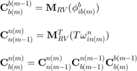

使用等效旋转矢量的姿态四元数更新

function qnb1 = qupdt2(qnb0, rv_ib, rv_in) % 功能：使用等效旋转矢量的姿态四元数更新 % 输入：qnb0 - 更新前的姿态四元数 % rv_ib - 载体系到惯性系的等效旋转矢量 % rv_in - 导航系到惯性系的等效旋转矢量 % 输出：qnb1 - 更新后的姿态四元数 % rv2q(rv_ib)等效旋转矢量转换为四元数 n2 = rv_ib(1)*rv_ib(1)+rv_ib(2)*rv_ib(2)+rv_ib(3)*rv_ib(3); if n2<1.0e-8 rv_ib0 = 1-n2*(1/8-n2/384); s = 1/2-n2*(1/48-n2/3840); else n = sqrt(n2); n_2 = n/2; rv_ib0 = cos(n_2); s = sin(n_2)/n; % n为fai，是等效旋转矢量的大小，rv_ib/n矢量是等效旋转矢量的方向 end % 得到的四元数是单位四元数 rv_ib(1) = s*rv_ib(1); rv_ib(2) = s*rv_ib(2); rv_ib(3) = s*rv_ib(3); % qb = qmul(qnb0, qib);四元数相乘 qb1 = qnb0(1) * rv_ib0 - qnb0(2) * rv_ib(1) - qnb0(3) * rv_ib(2) - qnb0(4) * rv_ib(3); qb2 = qnb0(1) * rv_ib(1) + qnb0(2) * rv_ib0 + qnb0(3) * rv_ib(3) - qnb0(4) * rv_ib(2); qb3 = qnb0(1) * rv_ib(2) + qnb0(3) * rv_ib0 + qnb0(4) * rv_ib(1) - qnb0(2) * rv_ib(3); qb4 = qnb0(1) * rv_ib(3) + qnb0(4) * rv_ib0 + qnb0(2) * rv_ib(2) - qnb0(3) * rv_ib(1); % rv2q(-rv_in) 等效旋转矢量转换为四元数 n2 = rv_in(1)*rv_in(1)+rv_in(2)*rv_in(2)+rv_in(3)*rv_in(3); if n2<1.0e-8 rv_in0 = 1-n2*(1/8-n2/384); s = -1/2+n2*(1/48-n2/3840); else n = sqrt(n2); n_2 = n/2; rv_in0 = cos(n_2); s = -sin(n_2)/n; end rv_in(1) = s*rv_in(1); rv_in(2) = s*rv_in(2); rv_in(3) = s*rv_in(3); % qnb1 = qmul(qnb, qb);四元数相乘 qnb1 = qnb0; qnb1(1) = rv_in0 * qb1 - rv_in(1) * qb2 - rv_in(2) * qb3 - rv_in(3) * qb4; qnb1(2) = rv_in0 * qb2 + rv_in(1) * qb1 + rv_in(2) * qb4 - rv_in(3) * qb3; qnb1(3) = rv_in0 * qb3 + rv_in(2) * qb1 + rv_in(3) * qb2 - rv_in(1) * qb4; qnb1(4) = rv_in0 * qb4 + rv_in(3) * qb1 + rv_in(1) * qb3 - rv_in(2) * qb2; % normalization 姿态四元数正交化 n2 = qnb1(1)*qnb1(1)+qnb1(2)*qnb1(2)+qnb1(3)*qnb1(3)+qnb1(4)*qnb1(4); if (n2>1.000001 || n2<0.999999) nq = 1/sqrt(n2); qnb1(1) = qnb1(1)*nq; qnb1(2) = qnb1(2)*nq; qnb1(3) = qnb1(3)*nq; qnb1(4) = qnb1(4)*nq; end